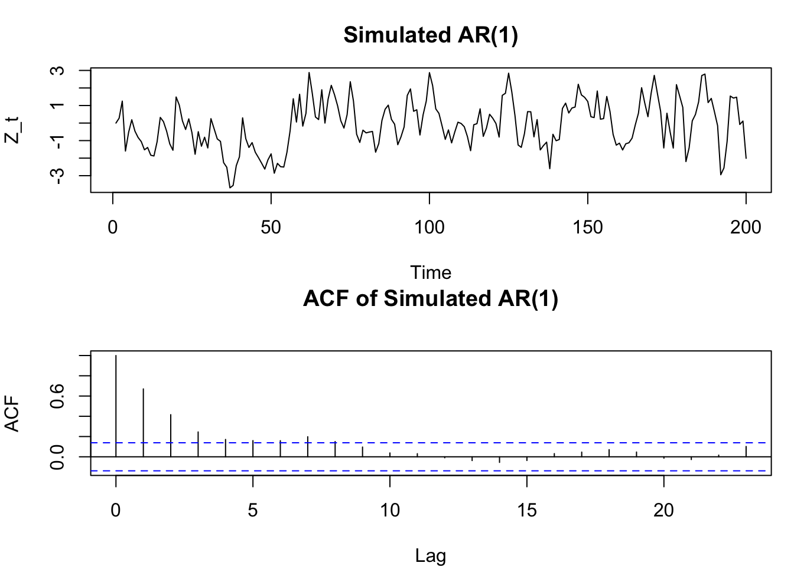
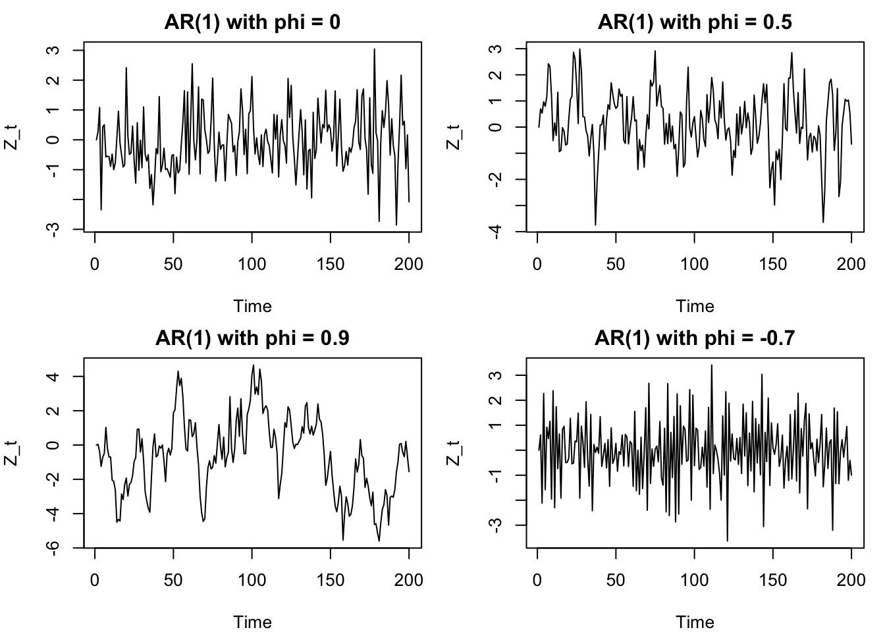
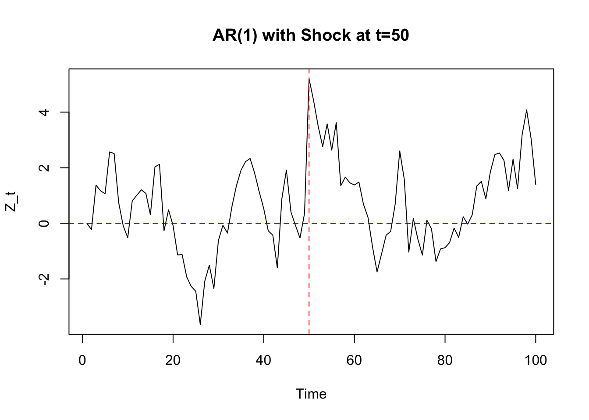
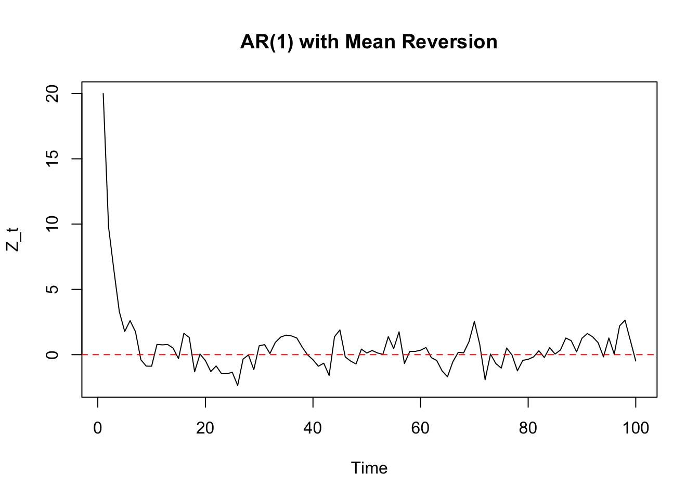
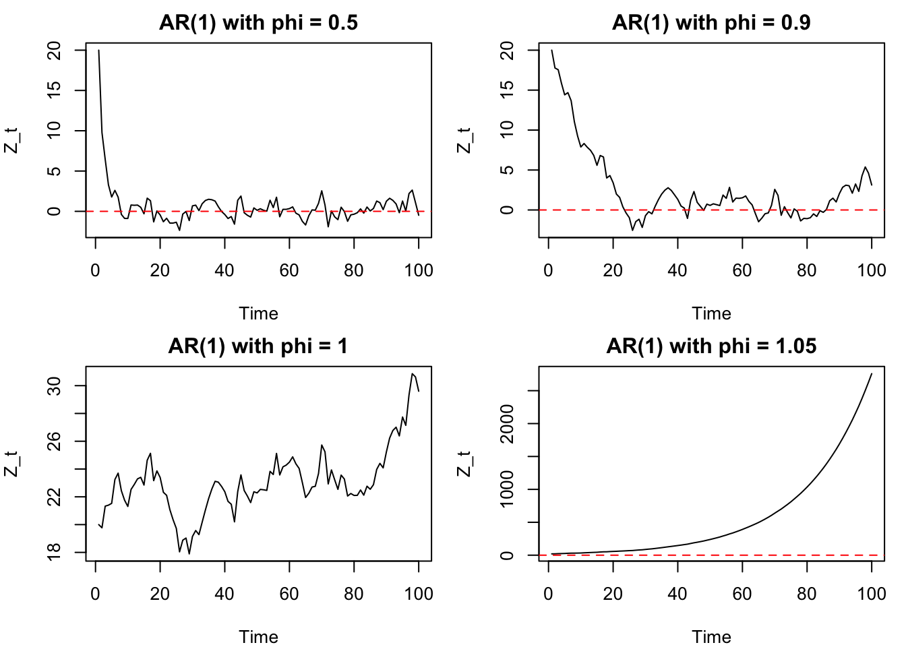
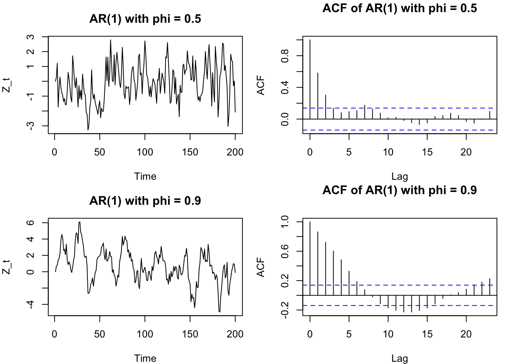
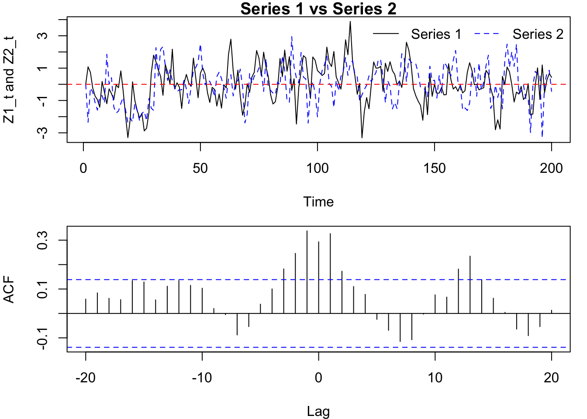

In this workshop, we will apply the concepts of AR(1) processes, shock propagation, mean reversion, and ACF analysis through a series of exercises. These exercises will help you understand how to simulate time series data, interpret patterns, and analyse relationships between interacting systems.
Exercise 1: AR(1) Simulation
Consider a system where current conditions depend on recent past conditions, such as temperature or traffic congestion.
If this were traffic flow, what would \(\phi = 0.6\) suggest about congestion?
A value of \(\phi = 0.6\) suggests moderate persistence in congestion.
In this context:
If traffic is unusually high at one time point (e.g., congestion builds up), it is likely to remain somewhat high in the next period, but not fully.
About 60% of the deviation from normal conditions carries forward to the next time step.
The remaining 40% is “forgotten” and replaced by new random influences (e.g., driver behaviour, signals, small disturbances).
Interpretation in traffic terms
Congestion does not disappear immediately → there is short-term memory
But it also does not persist for a very long time → it gradually clears
For example, if traffic is heavily congested now:
it will still be congested in the next few minutes,
but the effect will fade over time unless reinforced by new shocks.
Simulate an AR(1) process of length \(n=200\) with \(\phi = 0.6\) and \(\varepsilon_t \sim N(0, 1)\). Plot the simulated time series and its autocorrelation function (ACF). Describe the observed patterns in the time series and ACF.
set.seed(1234)n <-200phi <-0.6epsilon <-rnorm(n, mean =0, sd =1)Z <-numeric(n)for (t in2:n) { Z[t] <- phi * Z[t-1] + epsilon[t]}par(mfrow =c(2,1), mar =c(4, 4, 3, 1))plot(Z, type ="l", main ="Simulated AR(1)", xlab ="Time", ylab ="Z_t")acf(Z, main ="ACF of Simulated AR(1)")

The simulated AR(1) time series exhibits a pattern of persistence, where values tend to be similar to their recent past values due to the positive \(\phi\) coefficient. The ACF shows a gradual decay, indicating that the correlation between values decreases as the lag increases, which is characteristic of an AR(1) process.
Repeat part (a) for \(\phi = 0, 0.5, 0.9, -0.7\). Plot all four time series in one figure. Which series looks closest to white noise? Which shows the strongest persistence? Which shows oscillation? How does increasing \(|\phi|\) affect smoothness and persistence?
set.seed(1234)phis <-c(0, 0.5, 0.9, -0.7)Z_list <-list()for (phi in phis) { Z <-numeric(n) epsilon <-rnorm(n, mean =0, sd =1)for (t in2:n) { Z[t] <- phi * Z[t-1] + epsilon[t] } Z_list[[as.character(phi)]] <- Z}par(mfrow =c(2,2), mar =c(4, 4, 2, 1))for (phi in phis) {plot(Z_list[[as.character(phi)]], type ="l", main =paste("AR(1) with phi =", phi), xlab ="Time", ylab ="Z_t")}

\(\phi = 0\) looks closest to white noise, as it has no persistence and behaves like pure random noise.
\(\phi = 0.9\) shows the strongest persistence, with values that are highly correlated with their recent past, resulting in smoother and more persistent patterns.
\(\phi = -0.7\) shows oscillation, as the negative coefficient causes values to alternate in sign, creating a more volatile pattern.
Increasing \(|\phi|\) generally increases the smoothness and persistence of the time series, as values become more influenced by their past values. Positive \(\phi\) leads to smoother patterns, while negative \(\phi\) can lead to more oscillatory behavior.
Exercise 2: Shock propagation in AR(1)
Suppose a sudden event occurs (e.g., traffic accident or system disruption) that temporarily increases congestion.
In traffic flow context, what does the persistence of the shock represent?
The persistence of the shock represents how long the impact of the disruption continues to affect the system after the event itself has passed.
In the context of traffic:
The initial shock (e.g., an accident) causes a sudden increase in congestion.
Even after the accident is cleared, traffic does not immediately return to normal.
Instead, congestion lingers and gradually dissipates over time.
Simulate an AR(1) process with \(\phi = 0.8\) and \(\varepsilon_t \sim N(0, 1)\) for \(n=100\). Introduce a shock of magnitude 5 at time \(t=50\) (i.e., set \(Z_{50} = Z_{50} + 5\)). Plot the time series and describe how the shock propagates through time. How long does it take for the effect of the shock to diminish? Does the shock disappear immediately or gradually? How does the value of \(\phi\) affect the speed of shock dissipation?
set.seed(123)n <-100phi <-0.8epsilon <-rnorm(n, mean =0, sd =1)Z <-numeric(n)for (t in2:n) { shock <-ifelse(t ==50, 5, 0) # add shock at t=50 Z[t] <- phi * Z[t-1] + epsilon[t] + shock}plot(Z, type ="l", main ="AR(1) with Shock at t=50", xlab ="Time", ylab ="Z_t")abline(v =50, col ="red", lty =2)abline(h =0, col ="blue", lty =2)

The shock introduced at time \(t=50\) causes a sudden spike in the time series. The effect of the shock does not disappear immediately; instead, it gradually diminishes over time at rate \(\phi^k\) due to the persistence of the AR(1) process. The value of \(\phi = 0.8\) indicates that 80% of the deviation from normal conditions carries forward to the next time step, which means that the shock will have a lasting impact and will take several time steps to dissipate. The higher the value of \(\phi\), the slower the shock will dissipate, as more of its effect is retained in subsequent values.
Exercise 3: Mean Reversion in AR(1)
Many systems tend to return to a normal level after extreme events, such as prices, temperature, or queue length.
What does mean reversion represent in the context of stock prices, temperature, or queue length?
Mean reversion represents the tendency of the system to return to its typical or equilibrium level after a disturbance.
Traffic congestion: After unusually heavy congestion, traffic gradually clears and returns to normal flow levels.
Temperature: After an unusually hot or cold period, temperatures move back toward their typical seasonal level.
Queue length: After a long queue builds up, service eventually reduces it back toward a normal operating level.
Simulate an AR(1) process with \(\phi = 0.5\) and \(\varepsilon_t \sim N(0, 1)\) for \(n=100\) with initial value \(Z_1 = 20\). Plot the time series and describe the mean-reverting behaviour. How does the process return to its mean after a deviation?
set.seed(123)n <-100phi <-0.5epsilon <-rnorm(n, mean =0, sd =1)Z <-numeric(n)Z[1] <-20# initial valuefor (t in2:n) { Z[t] <- phi * Z[t-1] + epsilon[t]}plot(Z, type ="l", main ="AR(1) with Mean Reversion", xlab ="Time", ylab ="Z_t")abline(h =0, col ="red", lty =2)

The AR(1) process with \(\phi = 0.5\) exhibits mean-reverting behaviour, where values tend to return towards the mean (which is 0 in this case) after deviations. When the process deviates from the mean, the positive \(\phi\) coefficient causes subsequent values to be influenced by the previous value, leading to a gradual return towards the mean over time. The process will oscillate around the mean, with the magnitude of deviations decreasing as it gets closer to the mean.
Simulate the same AR(1) process but with \(\phi = 0.5, 0.9, 1\) and \(1.05\). Compare the mean-reverting behaviour with the previous case. Which process shows stronger mean reversion? How does increasing \(\phi\) affect the speed of mean reversion?
set.seed(123)n <-100phi_values <-c(0.5, 0.9, 1, 1.05)epsilon <-rnorm(n, mean =0, sd =1)par(mfrow =c(2, 2), mar =c(4, 4, 2, 1))for (phi in phi_values) { Z <-numeric(n) Z[1] <-20# initial valuefor (t in2:n) { Z[t] <- phi * Z[t-1] + epsilon[t] }plot(Z, type ="l", main =paste("AR(1) with phi =", phi), xlab ="Time", ylab ="Z_t")abline(h =0, col ="red", lty =2)}

The AR(1) process with \(\phi = 0.5\) shows stronger mean reversion compared to the processes with higher \(\phi\) values. In other words, smaller \(|\phi|\) leads to faster mean reversion. As \(\phi\) increases, the speed of mean reversion decreases, and the process becomes more persistent, taking longer to return to the mean after a deviation. When \(\phi = 1\), the process is a random walk and does not revert to the mean at all, while for \(\phi > 1\), the process exhibits explosive behaviour, diverging away from the mean over time.
Exercise 4: ACF and Diagnostic Plots
The ACF is commonly used in practice to detect patterns in time series data, such as traffic flow, temperature, and financial returns.
If you observe slow decay in ACF, what does that suggest about the system?
Observing a slow decay in the ACF suggests that the system has strong persistence (long memory). In the context of:
Traffic: congestion takes a long time to clear
Temperature: warm or cold periods persist
Finance: trends or momentum effects last longer
For \(\phi = 0.5\) and \(\phi = 0.9\), simulate AR(1) processes and plot the time series and ACF. Which ACF decays faster? How does this relate to the value of \(\phi\)? What would you expect the ACF to look like for \(\phi = 0\) and \(\phi = 1\)?
set.seed(1234)n <-200phi_values <-c(0.5, 0.9)par(mfrow =c(2, 2), mar =c(4, 4, 3, 1))for (phi in phi_values) { epsilon <-rnorm(n, mean =0, sd =1) Z <-numeric(n)for (t in2:n) { Z[t] <- phi * Z[t-1] + epsilon[t] }plot(Z, type ="l", main =paste("AR(1) with phi =", phi), xlab ="Time", ylab ="Z_t")acf(Z, main =paste("ACF of AR(1) with phi =", phi))}

The ACF for \(\phi = 0.5\) decays faster than the ACF for \(\phi = 0.9\), which indicates that the correlation between values decreases more rapidly as the lag increases for \(\phi = 0.5\). This is because a smaller \(\phi\) value leads to less persistence in the time series, while a larger \(\phi\) value results in stronger persistence and a slower decay of the ACF.
Exercise 5: VAR(1) Simulation
Consider two interacting systems, such as:
energy consumption and production,
traffic flow on two connected roads,
inflation and interest rates.
How does a change in one system affect the other over time? What does the coefficient matrix \(\Phi\) represent in this context?
A change in one system can affect the other through lagged dependence.
In a VAR(1) model,
\[
Z_t = \Phi Z_{t-1} + \varepsilon_t,
\]
the current values depend on the past values of both systems.
For example, if the two systems are traffic flow on connected roads:
high traffic on Road 1 now may increase traffic on Road 2 later,
congestion on Road 2 may feed back into Road 1,
shocks can move through time and across systems.
The coefficient matrix \(\Phi\) represents the dynamic relationship between the systems:
\(\phi_{11}\): effect of past System 1 on current System 1
\(\phi_{22}\): effect of past System 2 on current System 2
\(\phi_{12}\): effect of past System 2 on current System 1
\(\phi_{21}\): effect of past System 1 on current System 2
The diagonal entries describe own persistence, while the off-diagonal entries describe cross-system influence.
Consider a bivariate VAR(1) process with coefficient matrix \(\Phi = \begin{bmatrix} 0.5 & 0.2 \\ 0.1 & 0.4 \end{bmatrix}\) and \(\varepsilon_t \sim N(0, I)\). Is the process stable?
For a VAR(1) model to be stable (covariance stationary), the eigenvalues of the coefficient matrix must lie inside the unit circle:
\[
\rho(\Phi) < 1,
\]
where \(\rho(\Phi)\) is the spectral radius (largest absolute eigenvalue) of \(\Phi\) calculated as:
\[
\rho(\Phi) = \max_i \{ |\lambda_i| : \lambda \text{ is an eigenvalue of } \Phi \}.
\]
The eigenvalues of \(\Phi\) can be calculated as follows:
The VAR(1) process is stable since the spectral radius is less than 1.
Simulate a bivariate VAR(1) process with coefficient matrix and \(\varepsilon\) given in part (b). Plot the two time series and their cross-correlation function (CCF). Describe the observed relationships between the two series.
set.seed(1234)n <-200Phi <-matrix(c(0.5, 0.2, 0.1, 0.4), nrow =2)epsilon <-matrix(rnorm(2* n), nrow =2)Z <-matrix(0, nrow =2, ncol = n)for (t in2:n) { Z[, t] <- Phi %*% Z[, t-1] + epsilon[, t]}par(mfrow =c(2, 1), mar =c(4, 4, 1, 1))plot(Z[1, ], type ="l", main ="Series 1 vs Series 2",xlab ="Time", ylab ="Z1_t and Z2_t", col ="black")lines(Z[2, ], type ="l", col ="blue", lty =2)abline(h =0, col ="red", lty =2)legend("topright", legend =c("Series 1", "Series 2"), col =c("black", "blue"), lty =c(1, 2), bty ="n", ncol=2)ccf(Z[1, ], Z[2, ], main ="Cross-Correlation Function")

The two series exhibit some degree of correlation due to the off-diagonal elements in the coefficient matrix \(\Phi\). Series 1 is influenced by both its own past values and the past values of Series 2, while Series 2 is influenced by its own past values and the past values of Series 1. Non-zero cross-correlations indicate that one series influences the other over time.